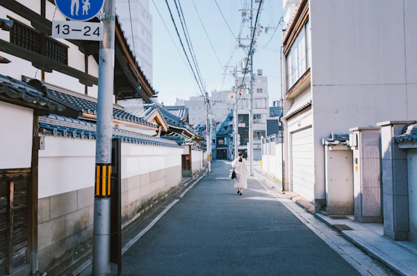

Cumprimentar também é contexto
Uma leve inclinação da cabeça pode acompanhar saudações. A profundidade e a formalidade dependem da situação; não é preciso exagerar.
PARA COMEÇARおはようございますOhayō gozaimasu · Bom dia (educado)
KISE JAPAN 01 / DISCOVER
日本語を学ぶ
Escrita, som, memória
e cotidiano japonês.
02 / ORIGIN KISE JAPAN
Uma plataforma construída para transformar
estudo em experiência.
01 — OS PRIMEIROS PASSOS
はじまり
Não é preciso saber por onde ir.
Só ter curiosidade para começar.
O resto, a gente
descobre junto.

02 — SÍMBOLOS QUE ABREM PORTAS
LER É DESCOBRIRUMA NOVA FORMA DE VER
にほんご · nihongo · língua japonesa
Um traço.
Um significado.
Outro horizonte.
03 — O CAMINHO CONTINUA
Cada nível, um novo ponto de vista.
Construa uma base sólida e vá além,
uma
descoberta de cada vez.
Nas ruas, nas conversas, nos pequenos rituais.
O japonês acontece muito além dos
livros.
05 — OUÇA. REPITA. SINTA.
Treine audição, expressões e shadowing
com os diálogos do universo dos animes.
06 — O RITMO DOS TRAÇOS
Desacelere. Observe. Desenhe.
Cada caractere é um encontro entre
o que você sabe e
o que você sente.
07 — UM ENCONTRO POR DIA
Reserve um instante para descobrir,
ouvir e praticar o caractere de hoje.
ニチ · ひ
日本 — Japão
A JORNADA É SUA
Personalizamos as dicas e desafios de acordo com sua bagagem:
Não se assuste com os símbolos! Todo estudante de japonês começa pelo Hiragana. Ele tem 46 caracteres que cobrem todos os sons fundamentais. Quando aprender o Hiragana, você já conseguirá ler palavras inteiras!
Muitos caracteres se parecem, mas pequenos detalhes mudam tudo. Aprenda os macetes:
Clique em qualquer caractere para ouvir a pronúncia nativa japonesa. Clique com botão direito ou duplo clique para praticar a caligrafia no Dojo!
Ao contrário do português (A, E, I, O, U), o japonês sempre segue a sequência sagrada de 5 sons: A (あ), I (い), U (う), E (え), O (お). Todas as consoantes (K, S, T, N, H, M, Y, R, W) combinam-se com essas 5 vogais.
Caracteres angulares e diretos utilizados para palavras importadas de outros idiomas (gairaigo), termos científicos e nomes de estrangeiros.
Muitas palavras comuns no Japão vêm do inglês ou do português! Por exemplo: パン (pan = pão) foi levado pelos navegadores portugueses no século XVI! コーヒー (koohii = café) e テレビ (terebi = televisão) são escritas sempre em Katakana.
Explore os ideogramas mais fundamentais do idioma japonês com pronúncias On'yomi (chinesa), Kun'yomi (japonesa) e vocabulário contextualizado.
Treine sua memória muscular desenhando o caractere sobre o quadro tradicional quadriculado (Genkouyoushi).
Selecione na lista ou clique em qualquer card das telas de Hiragana, Katakana ou Kanji:
Treine leitura, escrita e gramática com desafios rápidos — cada rodada é uma nova conquista.
Toque nas cartas para encontrar o par correspondente (Caractere japonês ⇄ Romaji/Significado)
Escolha uma modalidade abaixo para testar sua memorização visual e audição.
Explore sua série favorita na biblioteca ou entre no Listening Lab para praticar escuta, pronúncia e shadowing.
Escolha um universo, conheça os personagens e leve sua curiosidade para as sessões de japonês.
Ir direto para o Listening LabUm guia para observar hábitos, sabores, estações e lugares — e entender como a língua ganha sentido na vida real.
Começar a explorarCostumes mudam entre regiões, gerações e pessoas. Curiosidade e respeito são sempre bons começos.
Mais do que regras, são pistas para perceber o espaço compartilhado e se comunicar com consideração.
Uma leve inclinação da cabeça pode acompanhar saudações. A profundidade e a formalidade dependem da situação; não é preciso exagerar.
Na entrada de muitas casas, o genkan separa o exterior do espaço interno. É comum deixar os sapatos ali e usar chinelos próprios da casa.
Antes de comer, muitas pessoas dizem itadakimasu; ao terminar, gochisōsama deshita. As expressões agradecem a refeição e quem a preparou.
O clima e as datas variam bastante de norte a sul. Esta é uma pequena janela para algumas tradições sazonais.
A floração das sakura é acompanhada em diferentes regiões; hanami é o costume de apreciar as flores, muitas vezes em encontros ao ar livre.
花見 hanamiFestivais locais podem reunir barracas, música, danças e fogos. Cada matsuri tem sua própria história e forma de celebração.
祭り matsuriO momijigari é o passeio para observar as folhas avermelhadas. A mudança de cores começa em épocas diferentes conforme a região.
紅葉 momijiEm muitas casas, o kotatsu — uma mesa baixa com aquecimento e cobertor — vira ponto de encontro nos dias frios.
炬燵 kotatsuRegiões têm histórias, ingredientes, sotaques e modos de viver próprios. Quatro pontos para começar a viagem.
Conhecida por invernos rigorosos, paisagens amplas e uma forte presença de laticínios e frutos do mar na culinária local.
NORTE · NATUREZAÁrea de Tóquio e de grandes centros urbanos, com bairros de ritmos muito distintos e redes de transporte extensas.
LESTE · METRÓPOLERegião que inclui Kyoto, Osaka e Nara, marcada por antigas capitais, patrimônios históricos e tradições culinárias diversas.
OESTE · HISTÓRIAUm conjunto de ilhas subtropicais com uma história própria, incluindo a herança do Reino de Ryūkyū, música e culinária singulares.
SUL · ILHASExpressões simples para situações reais. Toque no ícone para ouvir a pronúncia.
Um ponto de partida, não um manual de regras: observe o contexto, respeite as diferenças e pergunte quando tiver dúvida.
Revise gramática, kanji e vocabulário com exemplos contextualizados e áudio. Escolha um nível para abrir o conteúdo.
Complete três etapas e faça um desafio para consolidar o que aprendeu.
Faça rodadas rápidas de gramática, kanji e vocabulário. Misture os conteúdos ou escolha um tema e nível específico.